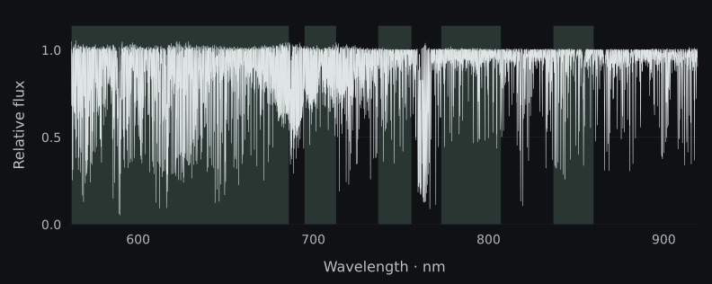
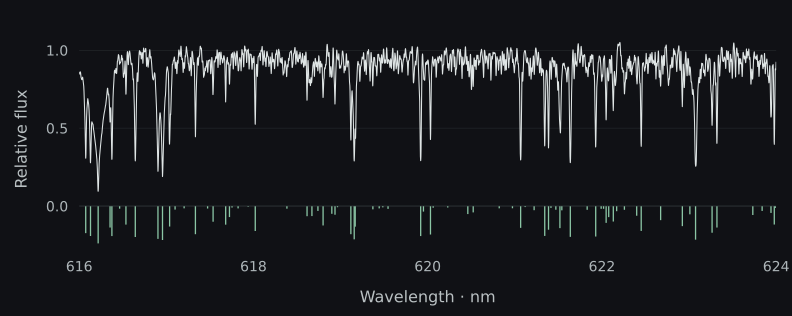

From spectrum to star
Reading physical properties from observed light.
Stellar spectra carry information about temperature, composition, and motion. I prepare the observations, compare diagnostic features with physical models, and check the measurements against independent evidence.
KOBE
A spectral synthesis workflow for late-K dwarfs observed with CARMENES VIS. It fits temperature and metallicity while anchoring surface gravity to independent stellar measurements.
KOBE-1 · from orders to spectrum
Merge the échelle orders into a one-dimensional CARMENES VIS spectrum, with the stellar radial-velocity correction applied.

KOBE-1 hosts two planets, KOBE-1 b and c, reported by Balsalobre-Ruza et al. (2025) ↗.
Keep the stellar signal
Mask telluric contamination, select clean spectral windows, and correct the residual continuum with a spline.

Bring the lines into alignment
Cross-correlate the prepared spectrum with a K5 mask to measure and correct the residual radial velocity.

Two passes, one physical anchor
One free parameter per pass; gravity and broadening stay anchored.
Luminosity → radius → log g
SED luminosity + catalog Teff give Rinitial; catalog mass gives log ginitial.
KOBE masses: an upstream mass–luminosity relation.- Microturbulence
- vmic = 0.7 km/s
- Macroturbulence
- vmac = 0 km/s
- Rotation
- v sin i = 2 km/s*
Fit [M/H]
- Free
- [M/H]
- Fixed
- Catalog Teff, initial log g
vmic, vmac, v sin i
Fit Teff
- Free
- Teff
- Fixed
- [M/H] from pass 1, initial log g
vmic, vmac, v sin i
Fitted Teff → Rfinal → log gfinal
Luminosity and mass stay fixed. Update once; no new synthesis pass.
Calibration & checks
Seven lines that biased the benchmark temperature test are removed from the default line list.
Before the fit, synthetic CCF widths calibrate an independent v sin i estimate that sets the rotation anchor. Microturbulence and macroturbulence remain fixed throughout the synthesis.
Gaia Benchmark Stars test the pipeline against reference values. Fit quality, velocity, rotation, S/N, and activity feed the result flags.
A paper presenting the stellar parameters of the KOBE project sample is in preparation.